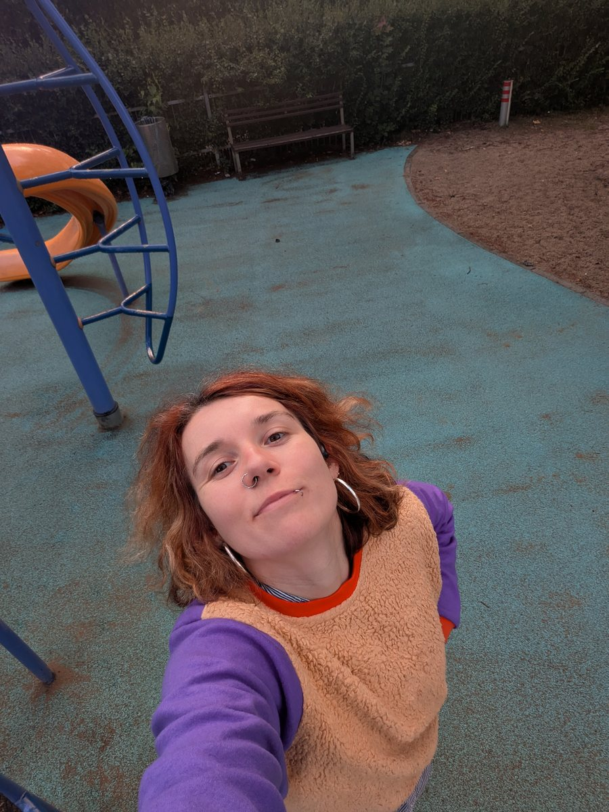

I care about reducing suffering, about AI going well, and about thinking clearly enough to tell which of my ideas are wrong. You can probably guess I've been around effective altruism and the rationality community for a while.
I like conversations that skip the small talk, people who agentically shape their life and leave things better than they found them (like refilling the water tank in a public coffee machine).
